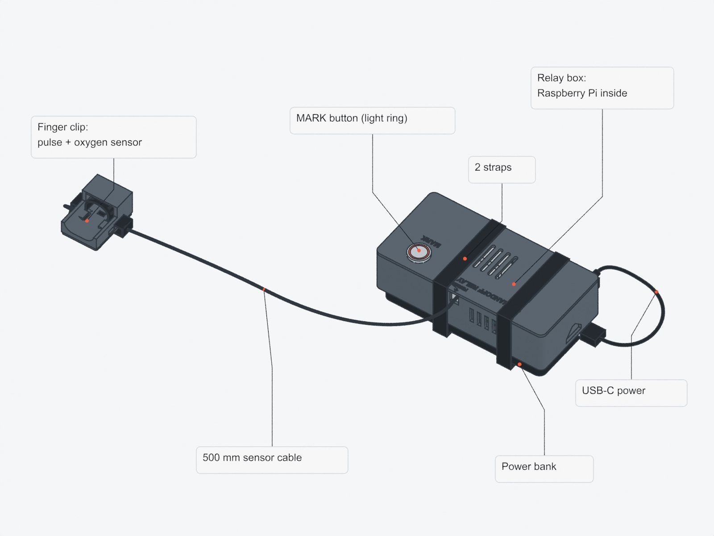

Download a bundle, unzip it, and open the STL files in your slicer. Every file is the current no-snap version, remade on Nov 3. Print the rail test first.

The finished relay box and finger clip.
New · Nov 7
Fixed camera window
Case A (rear) with the camera opening moved down to the Pixel 9 Pro's real camera bar and enlarged for tolerance. Reprint only this part; B and everything else stay. PLA, 5 walls, 25%, 3 mm brim, about 3–3.5 h. To check the window first, the fit ring in Fit tests now has the same opening and prints in about 12 min.
p1_rear_front_frame.stl
Start here
Fit tests
rail_fit_test.stl
p1_rear_fit_ring.stl
Rear version
All 8 parts
Rail test, fit ring, case A and B, relay base and lid, finger tray and cradle.
Front version
All 8 parts
Only if the phone test said front. The fit ring and case A and B differ; the rest is the same.
Backup mount
Universal phone plate
Holds any phone with rubber bands on the same harness buckle. PLA, 6 walls, 25%, 8 mm brim, about 65–80 min. Print it in the tilted position it loads in.
Downloads only work when this page is open in claude.ai. The same files are on the Mac in hardware/cad/stl/.
Print queue, rear version
#
File
Part
Settings
Time
1
rail_fit_test.stl
Rail test
4 walls, 100%, no brim
~15 min
2
p1_rear_fit_ring.stl
T2 phone fit ring
3 walls, 15%, no brim
~12 min
3
p1_rear_front_frame.stl
A, bodycam shell
5 walls, 25%, 3 mm brim
~3–3.5 h
4
p1_rear_back_plate.stl
B, chest plate
6 walls, 30%, 3 mm brim
~2.2 h
5
p2_base.stl
C, relay base
5 walls, 20%, 5 mm brim
~6–7 h
6
p2_lid.stl
D, relay lid with posts
5 walls, 25%, 3 mm brim
~2.4–2.8 h
7
p3_tray.stl
F, finger tray Black
4 walls, 25%, 3 mm brim
~15 min
8
p3_hood.stl
G, finger cradle Black
4 walls, 25%, 5 mm brim
~1 h
Every part: PLA or PETG (black for 7 and 8 if you have it), 0.4 mm nozzle, 0.2 mm layers, no supports. Load each file as it is, without rotating or scaling. The harness test T1 already passed, so it isn't included.
Before step 3: the rail test should slide together smoothly by hand, stop solidly at the closed end, and not rattle when held square. If it's too tight or too loose, report it before printing A and B.